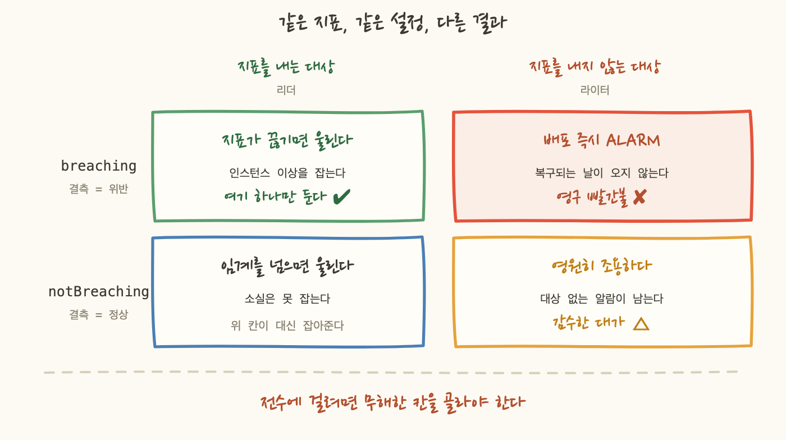
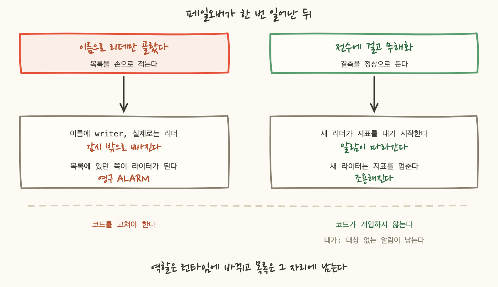

알람 하나를 추가하려다 계획 단계도 못 갔어요. 모듈이 필수 변수 하나가 비었다고 거부했습니다. 기본값이 없는 칸이 하나 있었어요.
고르라는 것인데, 두 값이 정확히 반대 방향입니다. 같은 결측을 놓고 하나는 장애라고 하고 하나는 아무 일도 없다고 해요. 그리고 이 칸의 답은 알람마다 다릅니다.
0 이라는 값과 지표가 아예 없는 것을 갈라야 한다는 이야기는 다른 시리즈에서 한 번 썼는데, 거기는 "이 자원을 지워도 되는가" 를 묻는 자리였어요. 여기는 질문이 다릅니다. "지금 아무 값도 안 오는데, 전화를 걸어야 하나" 입니다.
이 설정의 기본 동작은 결측을 무시하는 것입니다. 지표가 안 오면 알람은 마지막 상태를 유지하고 조용해요. 감시 대상이 사라져도 아무 일도 일어나지 않습니다.
그래서 감시 관점에서는 위험합니다. 인스턴스가 응답을 멈추면 지표도 함께 멈추는데, 그때가 정확히 알람이 울려야 하는 순간이니까요. 설계 문서가 필수 설정은 위반으로 보기 라고 적어둔 이유입니다.
그런데 전부 위반으로 두면 다른 사고가 납니다. 모듈 주석에 그 경로를 적어뒀어요.
장애가 없어서 알람이 울리는 것이 이 설정을 일괄 적용했을 때의 결과입니다. 그래서 결론은 "어느 값이 맞다" 가 아니라 단일 기본값이 위험하다 가 됐어요. 모듈이 기본값을 주지 않고 매번 명시하게 만들었습니다.
대가는 호출부가 장황해지는 것입니다. 알람 하나 추가할 때마다 그 칸을 채워야 해요. 의도한 마찰입니다. 기본값을 두면 아무도 판단하지 않으니까요. 대신 판단을 돕는 분기 규칙을 변수 설명에 박아뒀습니다. 그러면 호출부에서 매번 보입니다.
가장 뚜렷한 사례가 복제 지연이었어요. 지표 이름은 AuroraReplicaLag 이고 리더가 라이터를 얼마나 늦게 따라가는지를 밀리초로 보고합니다.
이 지표를 클러스터의 인스턴스 전부에 걸었습니다. 그리고 결측을 위반으로 두면 라이터 쪽 알람이 배포하는 순간 전부 ALARM 이 됩니다. 라이터는 자기 자신을 복제하지 않으니 이 지표를 발행할 일이 없어요. 값이 없는 것이 그 인스턴스의 정상 상태입니다.
이건 잠깐 울리는 게 아니라 영구 ALARM 입니다. 회선이 복구되기를 기다리는 것과 다르게, 라이터가 이 지표를 내는 날은 오지 않아요. 그리고 항상 빨간 알람은 사람을 알람 화면 자체에 둔감하게 만듭니다.
같은 모양을 다른 곳에서 한 번 더 만났습니다. 버스터블 인스턴스만 발행하는 CPU 크레딧 지표를 인스턴스 전체 목록에 걸면 똑같은 일이 나요. 비버스터블 쪽은 지표 자체가 없습니다.
반대 방향의 대가도 있습니다. 결측을 위반으로 둔 알람은 대상이 사라지면 아무도 끌 수 없어요. 지표가 끊기고 알람은 영원히 ALARM 이고 정상으로 되돌릴 방법이 없습니다. 그래서 서버 그룹 하나를 정리할 때 순서를 뒤집었습니다.
알람 설정 하나가 자원 정리 순서를 정하게 된 자리예요. 이런 것들은 코드에 적어두지 않으면 다음 사람이 같은 순서로 밟습니다.

그림의 왼쪽 위 칸에 "여기 하나만 둔다" 고 적은 것이 이 장의 규칙입니다.
DB 인스턴스 한 대에 알람이 다섯 종 걸려 있어요. 로컬 스토리지, 엔진 가동 시간, 복제 지연, 데드락, 디스크 큐 깊이입니다. 인스턴스가 응답을 멈추면 다섯 지표가 동시에 끊깁니다. 다섯을 다 위반으로 두면 한 사건에 알람 다섯 개가 뜨고 같은 사건에 알람이 셋 넘게 겹치면 사람은 셋 다 무시하게 됩니다.
그래서 지표 소실을 담당하는 알람을 하나만 정했어요. 엔진 가동 시간입니다. 살아 있으면 계속 증가하는 값을 보고하는 지표예요. 값이 사라지는 것이 곧 인스턴스가 없어졌다는 뜻입니다. 나머지는 결측을 정상으로 두고 자기 임계만 봅니다.
이 교차 참조가 설정의 근거입니다. 어떤 알람에 결측을 정상으로 둔다는 것은 그 사건을 다른 알람이 맡고 있다는 뜻이고 그 다른 알람을 이름으로 적어두지 않으면 나중에 아무도 확인할 수 없어요.
표에 예외가 하나 보일 겁니다. 로컬 스토리지 잔량도 위반으로 뒀어요. 이건 규칙 위반이 아니라 판단입니다. 남은 용량은 항상 보고되는 값이고 이 알람은 P1 이라 덜 민감하게 두는 쪽의 위험이 더 큽니다. 서버 그룹 쪽에도 같은 자리가 있어요. 전멸 감시와 부분 부족 감시가 같은 조건에 둘 다 위반으로 걸려 있고 지표 수집이 꺼지면 함께 울립니다. 중복이지만 하나는 전화를 걸고 하나는 슬랙 기록을 남기니 남겨뒀습니다.
그러니까 이 장의 규칙은 "결측 담당은 하나" 이고 예외를 둘 때는 중복이라는 것을 알고 남겼다고 적어두는 것이 조건입니다.
복제 지연 알람을 리더에만 걸면 이 문제가 다 사라집니다. 알람 여섯 개를 아끼고 결측 설정도 고민할 필요가 없어요. 그렇게 하지 않았습니다.
이름으로 리더를 고를 수 없기 때문이에요. 이 계정에는 이름에 writer 가 들어 있는데 실제로는 리더인 인스턴스가 있었고 같은 클러스터에서 이름에 reader 계열 문자가 들어간 쪽이 실제 라이터였습니다. 페일오버 한 번에 역할이 맞바뀌고 이름은 그대로 남은 결과예요.
이름으로 골랐다면 두 방향으로 동시에 틀렸을 겁니다. 실제 라이터에 영구 ALARM 을 걸고 실제 리더를 감시에서 빠뜨렸을 것이에요. 하나는 시끄러운 오답이고 하나는 조용한 오답인데, 뒤쪽이 더 나쁩니다.
그럼 실제 역할을 읽어오면 되지 않나요. 두 가지가 걸렸습니다.
첫째, 그 값은 페일오버 한 번에 바뀝니다. 코드가 적용 시점에 읽어와도 다음 페일오버에 거짓이 돼요. 목록의 유효기간이 "다음 페일오버까지" 인 셈입니다.
둘째, 이 스택은 알람이 지표 차원 문자열로만 대상을 가리키므로 데이터 소스가 필요 없다를 출발 전제로 삼았어요. 알람은 대상 자원을 만들지도 소유하지도 않고, 문자열로 지목만 합니다. 그 전제가 이 스택을 첫 코드화 대상으로 고른 근거이기도 했습니다.
그래서 전수에 걸고 무해화하는 쪽을 택했습니다. 결측을 정상으로 두면 라이터 쪽 알람은 조용히 있어요. 역할이 바뀌면 새 리더가 지표를 내기 시작하고 새 라이터는 내지 않게 되면서 알람이 저절로 따라갑니다. 코드가 개입할 일이 없습니다.
대가는 정직하게 적어야겠어요. 대상 없는 알람이 남습니다. 라이터 쪽 알람은 데이터를 한 번도 받지 못한 채 정상으로 표시되고 그 조용함은 "감시가 잘 되고 있음" 과 화면에서 구분되지 않습니다. 요금도 그만큼 더 냅니다. 그걸 감수한 근거는 3장이에요. 지표 소실은 다른 알람이 담당하고 있고 그 담당이 누구인지 주석에 적혀 있습니다.

같은 판단을 서버 그룹 알람에서도 썼어요. 목표 대수를 0 으로 내려둔 그룹이 몇 개 있었는데, 그 그룹을 목록에서 빼는 대신 식의 조건으로 걸렀습니다. 목표 대수는 런타임에 바뀌니까요. 오늘 0 이어도 내일 2 로 올릴 수 있고 그때 코드의 목록은 낡아 있습니다. 조건으로 두면 올린 뒤에 전멸했을 때 자동으로 울려요.
결측 처리를 정하는 것과 임계값을 정하는 것은 같은 성질의 일이었어요. 둘 다 명세를 그대로 옮기면 조용한 알람이 됩니다.
감지 목록에는 조건이 자연어로 적혀 있었습니다. "급증", "임계 초과", "증가 추세" 같은 것들이에요. 구현하려고 실제 값을 조회할 때마다 어긋났고, 어긋나는 방식이 한 가지가 아니었습니다.
첫 줄이 재미있어요. 14일 내내 정확히 0 이면 "급증" 이라는 개념이 필요 없습니다. 0 을 넘는 순간이 곧 이상이니까요. 조건이 단순해지는 게 아니라, 실측이 더 예민한 임계를 쓸 근거를 줬습니다.
배수로 잡은 자리도 있습니다. 복제 지연 임계는 1초로 뒀는데, 리더들의 평시 지연이 수십 밀리초라 실측의 스무 배 이상 여유입니다. 디스크 큐 깊이는 관측된 최대의 약 1.5배로 잡았어요.
뒤쪽에는 근거가 약하다고 코드에 적어뒀습니다. 이 DB 는 분산 스토리지를 쓰기 때문에 그 지표의 의미가 일반적인 경우와 달라요. 그래서 그 값에는 "관측된 최대보다 확실히 큰 값" 이라는 것 외의 근거가 없습니다. 그렇게 적어두면 다음 사람이 그 값을 믿을지 스스로 판단할 수 있어요.
반대 방향도 규칙으로 뒀습니다. 실측이 "이상이 이미 있다" 고 말하면 알람을 그것에 맞춥니다. 조용하게 만들지 않아요. 데드락 알람과 서버 부족 알람은 배포 즉시 발화했고 오탐이 아니었습니다. 그 대상을 목록에서 빼면 유일하게 문제 있는 대상을 감시 밖으로 빼는 셈이 됩니다.
이 방식의 약점도 적어둘게요. 실측은 관측 창에 의존합니다. 14일 0 이던 값이 15일째 나올 수 있어요. 패킷 드롭 임계가 정확히 그 위험 위에 서 있습니다. 그래도 받아들였습니다. 울리면 고치겠다는 쪽이 조용해서 모르는 쪽보다 낫습니다.
명세에 실패율로 적혀 있던 항목이 하나 있었어요. 오류 수를 호출 수로 나눈 값입니다. 그대로 만들면 안 되는 이유가 두 겹이었습니다.
먼저 분모 가드가 필요합니다. 없으면 호출이 한두 건인 구간에 "1회 호출, 1회 실패, 100%" 가 되어 새벽마다 울려요. 그래서 호출 수가 일정 수를 넘을 때만 비율을 계산하게 했습니다.
여기서 제가 계산을 틀렸어요. 첫 배포는 집계 주기 5분에 가드 10 이었습니다. 배포 직후 발화해야 할 함수가 정상으로 떴습니다.
총량이 많아도 집계 주기가 짧으면 가드를 못 넘습니다. 주기를 1시간으로 바꾸니 셋은 성립했고 하나는 여전히 성립하지 않았어요. 시간당 한 번 도는 함수였습니다.
그 하나는 절대값 알람으로 옮겼습니다. 하루에 몇 번 도는 작업이 실패하면 그것이 곧 100% 실패이고 비율을 계산할 이유가 없어요. 그래서 명세의 비율 알람 하나가 비율 셋과 절대값 여섯으로 갈렸습니다.
호출이 아예 없는 함수는 대상에서 뺐어요. 비율의 분모가 0 이고 절대값으로 걸어도 실행되지 않으니 발화하지 않습니다. 요금을 내면서 아무것도 감시하지 않는 알람이 됩니다.
정리하면 이번에 정한 것들은 전부 같은 모양이었어요. 결측을 위반으로 볼지, 임계를 얼마로 둘지, 비율로 볼지 절대값으로 볼지. 셋 다 항목마다 답이 다르고 하나의 기본값으로 덮으면 절반이 조용해지거나 절반이 영구히 울립니다.
writer 가 들어 있는데 실제로는 리더인 인스턴스가 있었고 그 역할은 페일오버 한 번에 또 바뀝니다. 실제 역할을 읽어와도 목록의 유효기간은 다음 페일오버까지예요. 그래서 전수에 걸고 무해화했고, 그 대가로 데이터를 한 번도 받지 못하는 알람이 남았습니다. 감수한 근거는 소실을 다른 알람이 맡고 있다는 것 하나입니다.